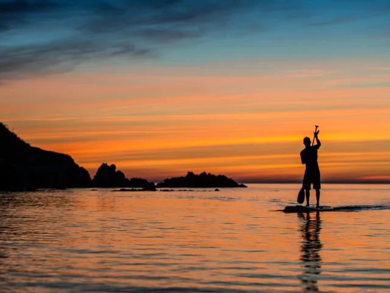
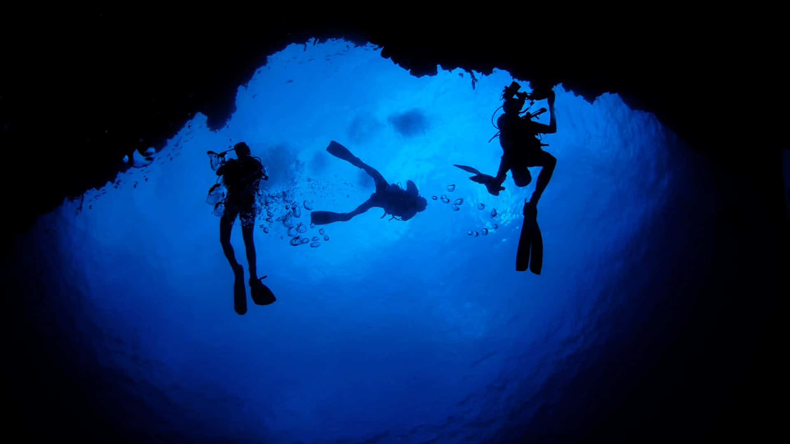

Lake SAP

Glissez sur les eaux calmes de Lake Sap à bord d'un kayak ou d'un paddle au moment où le soleil disparaît derrière les crêtes. Le pôle nautique met à disposition des embarcations légères et silencieuses, idéales pour explorer les criques sans perturber la faune aquatique. Au couchant, la surface du lac se teinte d'ambre et de pourpre, et les premiers dinoflagellés commencent à scintiller sous les pales. Une balade guidée de deux heures, accessible aux débutants comme aux initiés.

Enfilez combinaison et masque pour une immersion totale dans les eaux phosphorescentes de Lake Sap. Encadrée par les moniteurs du pôle nautique, cette plongée de nuit vous emmène à proximité des cheminées hydrothermales où l'eau atteint 32 °C. Chaque mouvement — un battement de palme, une main qui traverse le courant — déclenche une traînée lumineuse bleu-vert. L'expérience dure environ une heure et reste accessible aux plongeurs certifiés niveau 1 minimum. Le matériel (combinaison étanche, lampes étanches, bouteilles) est fourni sur place.